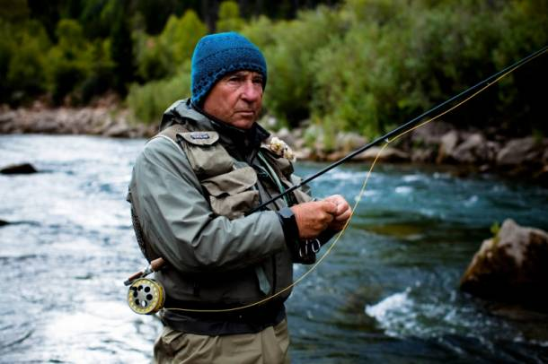

Yvon Chouinard fly fishing
Important Moments
- Born november 9, 1938 in Lewiston, Maine
- In 1947 family moves from Maine to Southern California
- As a member of the Southern California Falconry Club in 1953 he is itroduced to rapelling and climbing
- In 1957 Chouinard buys a used coal-fired forge and anvil, and teaches himself how to blacksmith in order to make his own pitons for climbing
- He sold pitons out of the trunk of his car for years while continuing to push climbing standards Yosemite, the Canadian Rockies and Patagonia
- In 1965 he started Chouinard Equipment, Ltd along with climbing partner Tom Frost
- In the late 1960's he and Frost began redesigning ice climbing tools to perform better on steeper ice, helping to start the modern sport of ice climbing
- In 1971 and 1972, Chouinard and Frost introduced new aluminum chockstones, called Hexentrics and Stoppers, ushering in "clean climbing", and signaling the end of pitons.
- Brought back a rugby shirt from Scotland for use as a climbing shirt, and started selling them to people who wanted one. This led to the creation of his next company, Patagonia.
- Patagonia pledged in 1986 to donate 1% of sales or 10% of profits (whichever was greater) to environmental causes.
- In the same time they were providing employees healthy food at a company cafeteria and free child care long before this became the norm.
- Realizing that cotton production was one of biggest pollutants, the company began using only organic cotton for all its cotton clothing in 1996
- In 2005 published Let My People Go Surfing
- In 2012 published The Responsible Company: What We've Learned from Patagonia's First 40 years
- Received the John Muir Award from the Sierra Club in 2018